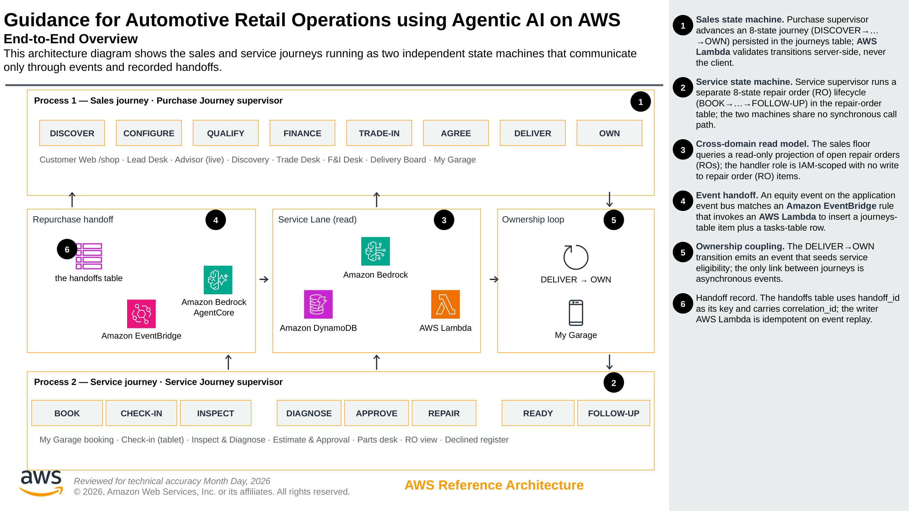
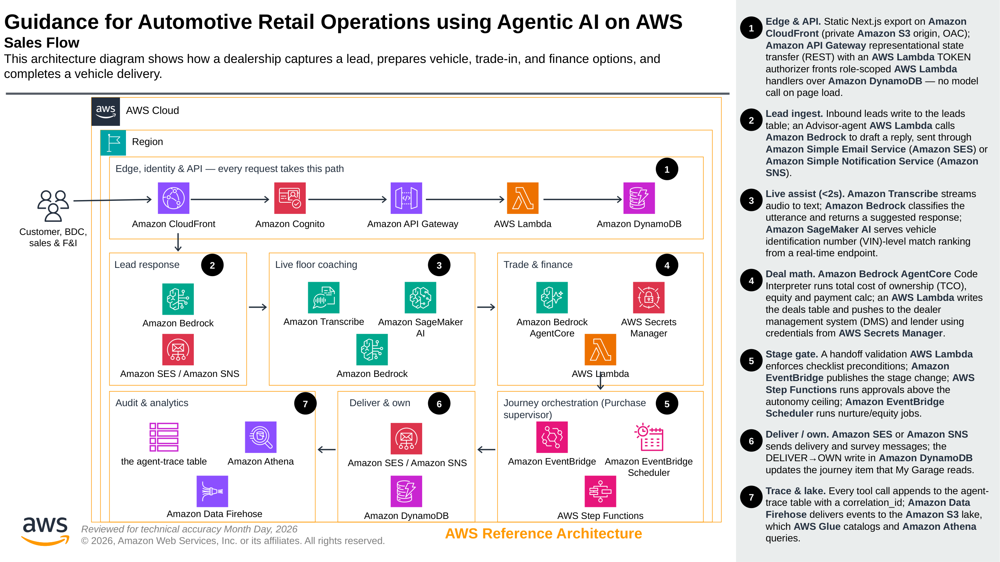
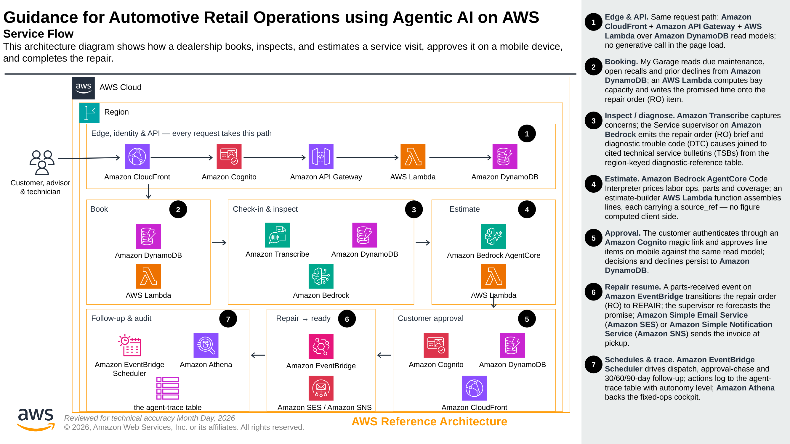
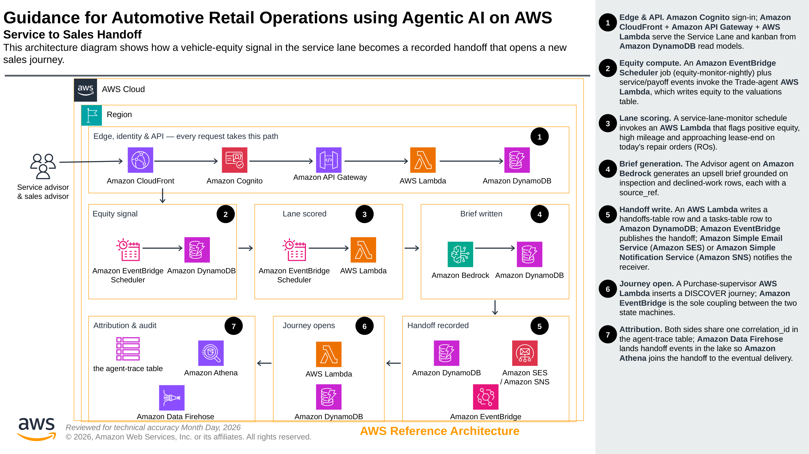
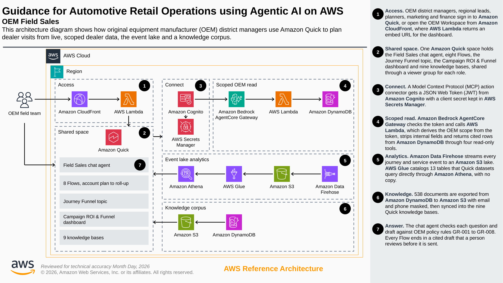
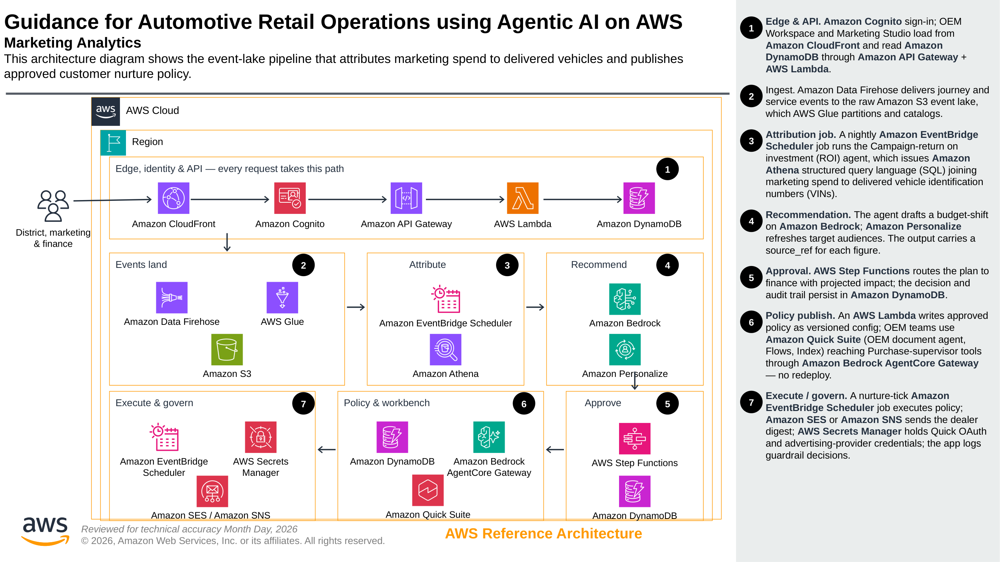

The problem: every handoff loses the customer
A vehicle purchase and its service visits cross many systems that each optimize their own step: the CRM owns the lead, the dealer management system (DMS) owns the deal and the repair order, valuation tools own the trade-in, marketing platforms own the campaign, and scheduling and inspection tools own the service visit. None of them sees the whole customer, so context is lost at each handoff, and people re-key, look up and chase information by hand while the buyer waits.
One shared journey record
Sales and service run as two state machines, DISCOVER → OWN and BOOK → FOLLOW-UP, that share one customer record and talk only through events and recorded handoffs.
Agents that do the legwork
Seven agents draft first responses, prepare trade-in and finance options, build estimates and turn service-lane equity into the next sale. Every figure comes from a deterministic service, with its source.
People stay in control
Agents start at recommend: they write cards, leads and drafts for a person to approve. Amazon Bedrock Guardrails check every model call.
Agents for your team and your customer: one journey, lead to service
Follow one buyer from an online lead through sale, finance, delivery and the first service visit, and see which agent helps each role at each handoff.
How it is built


- Every request takes the same path: Amazon CloudFront, Amazon Cognito, Amazon API Gateway, AWS Lambda and Amazon DynamoDB, with no model call on page load.
- An inbound lead gets a drafted first response from the Sales Agent on Amazon Bedrock.
- On the sales floor, the advisor sees ranked vehicle matches, objection handling and the next best action.
- Trade-in equity, payments and total cost of ownership are calculated in AgentCore Code Interpreter, so every number is auditable.
- A stage gate checks each handoff; Step Functions routes approvals above the autonomy ceiling.
- Delivery moves the journey to OWN, which My Garage reads.
- Every tool call lands in the agent-trace table and the event lake.

- My Garage books against due maintenance, open recalls and prior declines; a Lambda function computes bay capacity and the promised time.
- At check-in and inspection, the Service Agent writes the repair-order brief and joins trouble codes to cited service bulletins.
- The estimate is priced in Code Interpreter; every line carries its source.
- The customer approves line items on a phone; decisions and declines are stored.
- A parts-received event moves the repair order to REPAIR and re-forecasts the promise.
- Scheduled jobs drive approval chasing and 30/60/90-day follow-up.

In the story: the first response, trade-in and finance desks map to the sales flow; the booking, inspection, estimate and approval scenes map to the service flow; the "upgrade signal" in the service lane is the handoff.
Sales operations, simplified with Amazon Quick Flows
One input in, a finished draft out. Eight Flows give the OEM district manager and sales operations a cited draft from live, scoped dealer data: District Roll-up, Sales Ops Digest, Account Plan, Opportunity Brief, Meeting Package, Win Strategy, Contact Report and Action Plan.
How it is built

- District managers, regional leads, planners, marketing and finance sign in to Amazon Quick, or open the OEM Workspace from the console.
- One shared Quick space holds the Field Sales chat agent, the eight Flows, the Journey Funnel topic, the Campaign ROI & Funnel dashboard and nine knowledge bases.
- An MCP connector gets a token from Amazon Cognito, with its client secret in AWS Secrets Manager.
- The AgentCore Gateway checks the token and calls a Lambda function that derives the OEM scope and returns cited rows through four read-only tools.
- Amazon Data Firehose streams every journey and service event to the S3 lake; AWS Glue catalogs it and Amazon Athena queries it.
- The knowledge corpus (538 documents, contact details masked) feeds the knowledge bases.
- Every Flow ends in a cited draft that a person reviews before it is sent, checked against OEM policy rules GR-001 to GR-008.

In the story: each Flow's "Where the data comes from" panel is the path in the field sales diagram, from the input through the OEM Read Gateway and the funnel topic to the cited draft.
The seven agents
The console and Amazon Quick show agents by name only. Each agent is named for its job and serves one or both processes, or the OEM level above them.
| Agent | What it does | Where it works |
|---|---|---|
| Journey Agent | Supervises the purchase journey, DISCOVER → OWN; validates each stage handoff and builds the Sales Package | Sales process |
| Discovery Agent | Lifestyle intake and ranked vehicle matches, EV and ICE | Sales process |
| Sales Agent | First responses, live floor assistance and objection handling; upsell briefs from the service lane | Sales process |
| Trade-In Agent | Trade-in value, payoff and equity, with comparables | Sales process |
| Service Agent | Supervises the service journey, BOOK → FOLLOW-UP; repair-order briefs, estimates and follow-up | Service and ownership |
| Campaign Agent | Campaign attribution and budget-shift recommendations | OEM marketing |
| Field Sales Agent | Chat and the eight Flows for district managers and sales operations | OEM field sales, in Amazon Quick |
What gets deployed, and what it costs
The one-click deployment (deploy/guidance-deploy.sh) runs unattended in a fresh account, verifies itself and prints the console URL. It needs no Docker, CDK, CloudFormation or third-party key. Amazon Quick is an optional add-on.
| Scenario (fictional OEMs from the synthetic data) | Per month | Per dealer |
|---|---|---|
| Pilot: Meridian Motors (US), 11 dealers, 72 users | $693.14 | $63.01 |
| Regional rollout: Meridian Motors (US) + Nordwerk Automobile (DE), 100 dealers, 1,000 users | $6,121.38 | $61.21 |
US East (N. Virginia), on-demand list prices, for the resources a default deployment creates; Amazon Bedrock model usage is most of it. The assumptions and unit prices are in the editable cost estimate workbook. Prices change; check the AWS Pricing Calculator before you rely on them.
Next: Deploy the Guidance · Documentation for customers and partners · Step-by-step demo workflows